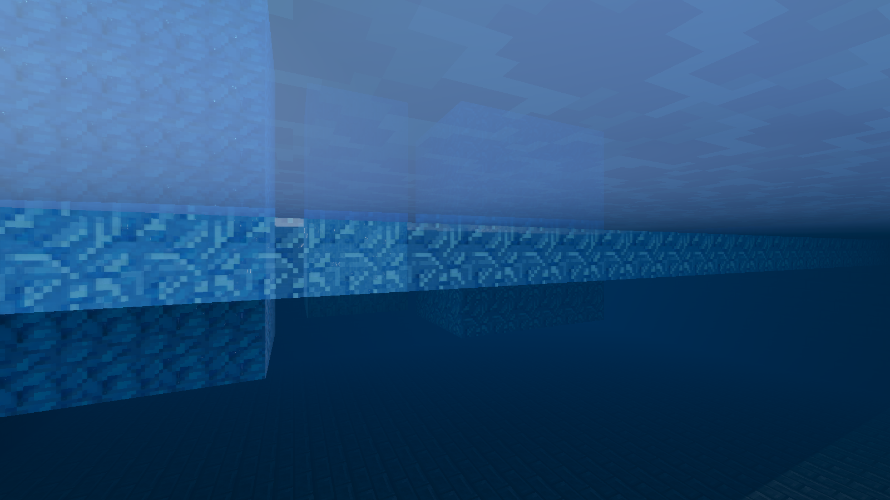
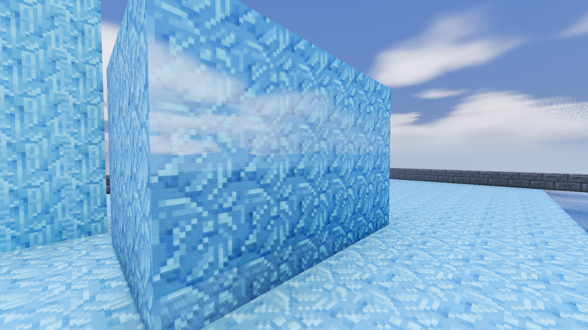
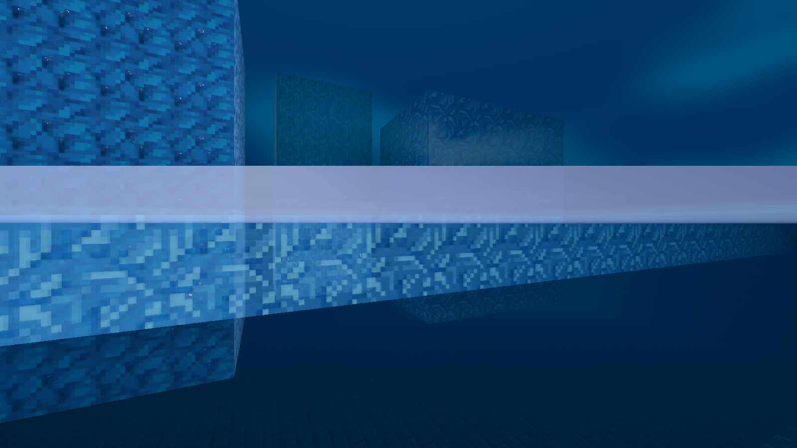

Live Mineclonia test pool, Luanti 5.17.0 and Godot 4.5.1 Forward+. These are controlled geometry/material diagnostics, not a natural landscape showcase. Implementation, validation and limitations.
Camera and server time match. Clouds evolved between captures; use these to compare ice geometry and material, not grading. Before is the previous default with Solid ice enabled; after is the revised default with transmission.

These two views show the revised material only.

The water surface is at y=79.5. These frames check the ice edge while moving through that surface. At y=79.49/79.51 a camera-clipping band remains on the water surface; the ice geometry checks do not claim to fix that artifact.

The edge contains all 66 triangles across its 33-node width. Geometry and activation checks. The extra background view cost about 2.2 ms GPU time in the fixed pool test on an RTX 3090; measurement. Solid ice skips that view. Multi-layer volume refraction and distant ice are outside this pass.